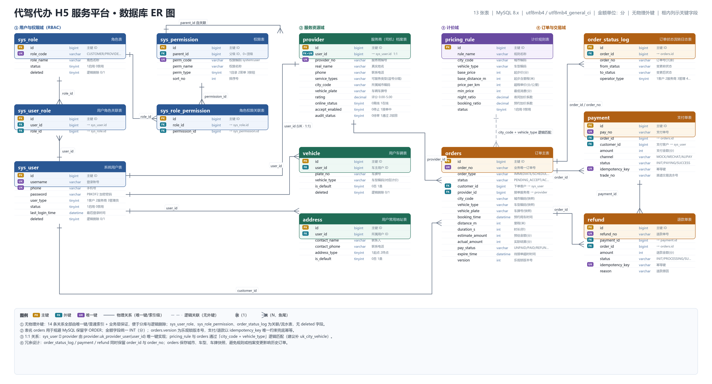

1 个 Spring Boot 后端 + 3 个 Vue 3 前端 · 模块协作 / 数据流 / 司机抢单机制 · 配合《学习文档-模块协作与数据流.md》阅读
三个前端各自独立部署，共用同一套后端与同一套账号体系；后端只依赖 MySQL 与「可降级」的 Redis。
任何一个 /api/** 请求都会按这个顺序穿过六层，每层各管一件事。
200，成功与否写在 body 的 code 里。
所以前端必须在「成功分支」里判断 res.code === 200，否则你会拿到一个没有 data 的响应体却不报错。
沿「谁发起 → 谁处理 → 谁配合 → 落到哪张表」这条主线看，任何一个功能都能在一行内定位到代码位置。（表格可横向滚动）
| 功能 | 发起端 | Controller | Service（编排者） | 协作模块 | 落库表 |
|---|---|---|---|---|---|
| 登录 / 注册 | 客户司机管理 | AuthController | AuthServiceImpl | PasswordEncoderJwtUtilSysRoleMapper | sys_user sys_user_role |
| 请求鉴权 | 全部接口 | —（拦截器） | AuthInterceptor.preHandle | JwtUtilUserContextRequireRole | 权限 5 张表 |
| 价格预估 | 客户 | CustomerOrderController.estimate | PricingServiceImpl.estimate | PricingRuleMapper | pricing_rule |
| 客户下单 | 客户 | CustomerOrderController.create | OrderServiceImpl.create | IdempotencyServicePricingServiceNoGeneratorOrderProperties | orders order_status_log |
| 接单大厅 | 司机 | ProviderOrderController.hall | OrderServiceImpl.pageHall | ProviderMappercanAcceptOrder() | orders provider |
| 抢单 ★ | 司机 | ProviderOrderController.grab | OrderServiceImpl.grab | ProviderMapperIdempotencyServiceOrderStateMachineOrdersMapper.grabOrder | orders order_status_log |
| 开始 / 结束服务 | 司机 | ProviderOrderController.start / finish | OrderServiceImpl.startService / finishService | OrderStateMachinePricingServicecasStatus | orders order_status_log |
| 发起支付 | 客户管理 | PaymentController.pay | PaymentServiceImpl.createPayment | OrderServiceIdempotencyServiceNoGenerator | payment orders |
| 支付回调（模拟） | 支付网关 | MockPaymentCallbackController | PaymentServiceImpl.handleCallback | markPaid CASOrderStateMachineOrderService | payment orders order_status_log |
| 退款 | 管理 | AdminOrderController.refund | PaymentServiceImpl.refund | RefundMappermarkRefundedOrderService | refund payment orders |
| 超时自动关闭 | 定时器 60s | — | OrderTimeoutTask → closeExpiredOrders | OrdersMapper.closeExpiredOrders | orders 不写日志 |
| 在线 / 接单开关 | 司机 | ProviderProfileController | ProviderServiceImpl | — | provider |
| 计价规则维护 | 管理 | AdminPricingController | PricingServiceImpl | PricingRuleMapper | pricing_rule |
| 用户 / 角色 / 权限 | 管理 | AdminUserController AdminRoleController |
SysUserServiceImpl SysRoleServiceImpl |
SysRolePermissionMapper | 权限 5 张表 |
全部规则集中在 OrderStateMachine.TRANSITIONS 一张 EnumMap 里，order 与 payment 两个模块共用同一套校验。
三个司机同一毫秒点「立即接单」。Redis 只负责把 3 个请求压成 1 个；真正裁决胜负的是那条带完整 WHERE 的 UPDATE。
WHERE 的 UPDATE。
Redis、MQ 都是在这个基础上加性能，不是加正确性。
OrderServiceImpl.grab() 在一个事务里顺序执行，任一步抛异常则后续全部不执行、已执行的回滚。
支付成功由「支付模块反推订单」，退款由「管理端发起」。两条链路都用条件更新保证幂等，重复执行不会重复推进。
每一层都能独立生效，最后一层是数据库，永不失效。
X-Idempotency-Key 请求头
Home.vue 调 randomKey('order') 生成 order-<时间戳36进制>-<随机串>，同一次提交复用同一个 key
daijia:idem:order:create:{customerId}:{key}，TTL 5 分钟
命中即抛 5001「重复请求，请勿重复提交」。Redis 不可用时 RedisHelper 直接返回 true 放行（熔断 30s）
orders.uk_order_no 唯一索引 + 捕获 DuplicateKeyException
order_no 由「DO + 17 位时间戳 + 4 位随机数」生成，撞号概率极低，但撞了就转 5001，不会静默成功
uk_idempotency_key）和退款（幂等键 = refund:{orderNo}:{refundNo}）上，
是项目里复用得最彻底的一个模式。
13 张表 · 无物理外键 · 金额统一为「分」· 关系由唯一键/索引 + 业务层保证。

vehicle（用户车辆）和 address（常用地址）两张表建好了但没有对应的 Java 实体/Mapper，
属于预留设计。看代码时找不到它们不是你看漏了。
读懂了架构之后，能指出这些问题才说明真的读进去了。
| 优先级 | 问题 | 位置 | 后果 / 修法 |
|---|---|---|---|
| P0 | 抢单与大厅都没校验 expire_time，而定时关闭任务 60 秒才跑一次 |
grab() 第 261 行pageHall 第 227 行 |
中间最多 60 秒窗口能抢到本该关闭的单。 修：加 expire_time > NOW() 条件 |
| P0 | 超时关闭是批量 UPDATE，不写 order_status_log |
OrdersMapper.closeExpiredOrders |
时间线断档，客户看不出「为什么单没了」。 修：按 id 集合补写日志 |
| P1 | 预约单的 expire_time 仍从下单时间算 |
create() 第 127 行 |
3 天后的预约单 15 分钟就被关。 修：改用 booking_time 倒推 |
| P1 | AuthInterceptor 每请求 3 次无缓存查询（用户/角色/权限） |
第 80~100 行 | 抢单热点链路固定开销。 修：角色权限缓存进 Redis + 改角色时失效 |
| P1 | assignRoles 无事务：先删光再逐条插 |
SysUserServiceImpl:82-98 |
中途失败会让用户丢失全部角色。 修：加 @Transactional |
| P1 | 抢单失败错误码语义混淆（三种情况都是 2003） | grab() 三处 |
「点了两次」和「被别人抢走」提示一样。 修：拆分为不同 code |
| P2 | 两个 saveStatusLog 实现不一致 |
OrderServiceImpl vs PaymentServiceImpl | 支付日志没有操作人名。 修：抽公共组件 |
| P2 | finishService 用当前计价规则重算，与下单预估可能差异大 |
第 331 行 | 用户投诉「和预估价差太多」。 修：结算用下单时的规则快照 |
| P2 | update(null, wrapper) 不递增 version |
startService / finishService / cancelOrder | version 无法反映真实修改次数。 修：显式写 version=version+1 |
| P2 | Redis 令牌在事务提交前释放 | grab() 的 finally |
短窗口多次进 DB（已被 CAS 兜住）。 修： TransactionSynchronization.afterCompletion |
PayStatus.PAYING != null 恒真等 13 项）见
《学习文档-模块协作与数据流.md》第 11 章。